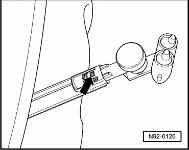

Headlamp Spray Nozzle Holder
Headlamp Spray Nozzle Holder
• Washer nozzle holder can also be removed and installed with bumper installed.
Removing
- Switch off ignition, switch off all electrical consumers and remove ignition key.
- Pull out spray nozzle until it reaches stop and unclip cover cap - 1 - from pins - arrows -.

- Lift securing clip - arrow - slightly using a small screwdriver.

- Pull out washer nozzle bracket.
Installing
Install in reverse order of removal, noting the following:
- Bleed headlamp washer system after completing assembly work --> [ Headlamp Washer System, Bleeding ] Headlamp Washer System, Bleeding.